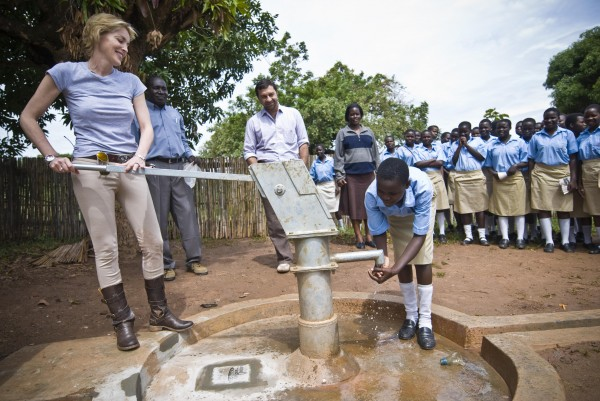
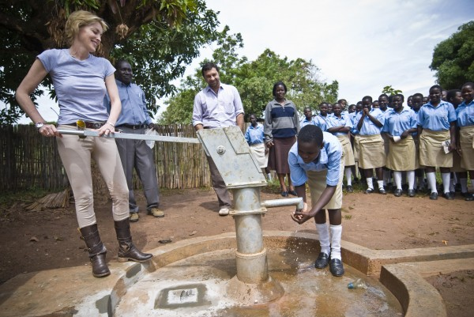

PERMETTRE L’ACCES A L’EAU POTABLE PAR LE FORAGE DE PUITS AINSI QUE LA MISE EN PLACE DE SYSTEMES D'IRRIGATION
L’eau est une ressource indispensable pour tout être humain. Il est donc impossible de vivre dans des conditions décentes sans eau potable. L’UNICEF estime que 2,1 milliards de personnes dans le monde sont encore privées d’un point élémentaire d’eau potable, disponible rapidement et exempt de toute contamination.
A CHAQUE MINUTE, CINQ PERSONNES DÉCÈDENT PAR MANQUE D’EAU POTABLE
Parmi ces personnes, l’ONU estime que 844 millions ne disposent pas de service d’eau à moins de trente minutes de marche. Dans le monde, cinq personnes meurent à chaque minute à cause de ce fléau ! « Très souvent, ce sont les enfants qui sont chargés d’aller chercher l’eau très loin du village avant d’aller à l’école, sans être sûr qu’elle soit potable ».
 

H2O se mobilise pour fournir de l’eau potable en urgence en cas de crise humanitaire, notre ONG reste sur place pour pérenniser l’action et assurer avec des puits l’autonomie des communautés.
H2O A FORÉ PLUS DE 1550 PUITS ET MIS EN PLACE PLUS DE 3500 SYSTEMES D'IRRIGATION
En tant qu’acteur humanitaire majeur, H2O se mobilise les populations en situation d’extrême vulnérabilité. Depuis sa création, notre ONG a foré ou réhabilité plus de 1550 puits dans des pays comme le Tchad, le Mali, dans des camps de réfugiés Rohingyas au Bangladesh, etc. Nos équipes s’appuient sur une expertise forgée au fil des années et reconnue par nos pairs localement et à l’international. En 2021, H2O a prévu de continuer à creuser des puits dans des régions écartées des réseaux d’approvisionnement.